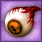
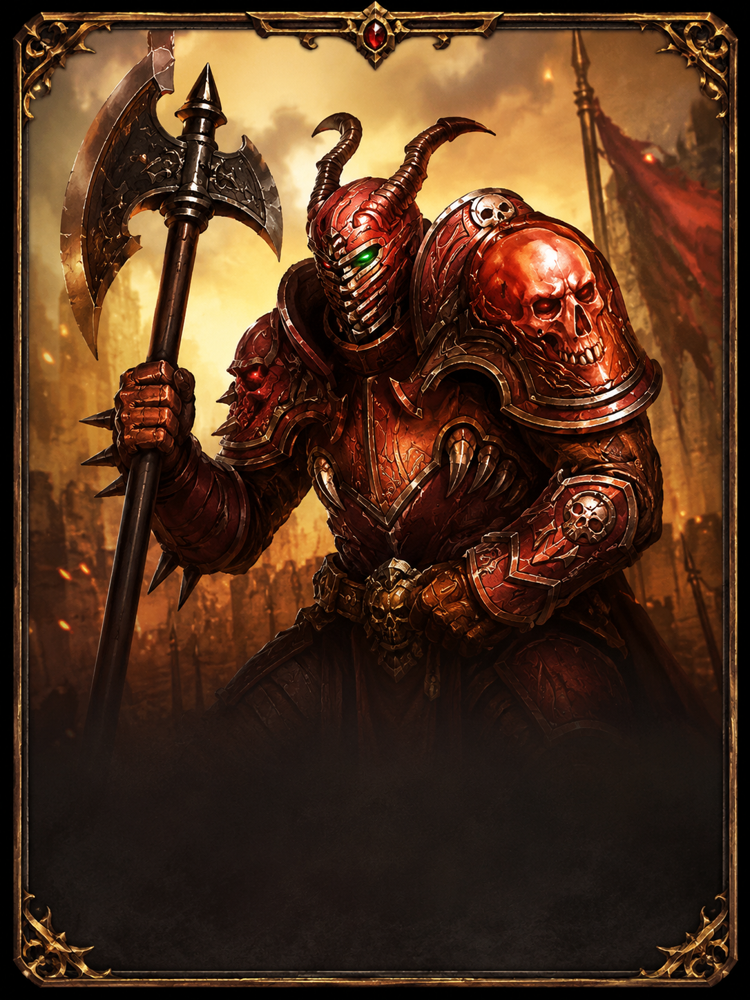

Öfkeli Göz
Ana itibar kaynağıdır.

Kötülük Yapanlar itibarı, Öfkeli Göz ve Ölü Savaşçının Kafatası kullanılarak kasılan temel itibar gruplarından biridir.
Bu itibarda temel olarak aşağıdaki kaynaklar kullanılır.

Ana itibar kaynağıdır.
Her aşamada sabit olarak kullanılan yardımcı kaynaktır.
Her işlem +10 şan verir.
| Şan Aralığı | 1 İşlem İçin Öfkeli Göz | 1 İşlem İçin Kafatası | Kazanılan Şan |
|---|---|---|---|
| 0 - 1000 | 3 | 5 | +10 |
| 1000 - 2000 | 4 | 5 | +10 |
| 2000 - 3000 | 5 | 5 | +10 |
0'dan 3000 şana kadar gereken toplam kaynak hesabı.

0 - 500 şan
150 Göz / 250 Kafatası
500 - 1000 şan
150 Göz / 250 Kafatası
1000 - 2000 şan
400 Göz / 500 Kafatası
2000 - 3000 şan
500 Göz / 500 Kafatası
Saygı sonrası özel aşama
Ek görev ve kaynak isterMevcut şan ve hedef şan girerek gereken kaynak miktarını hesapla.